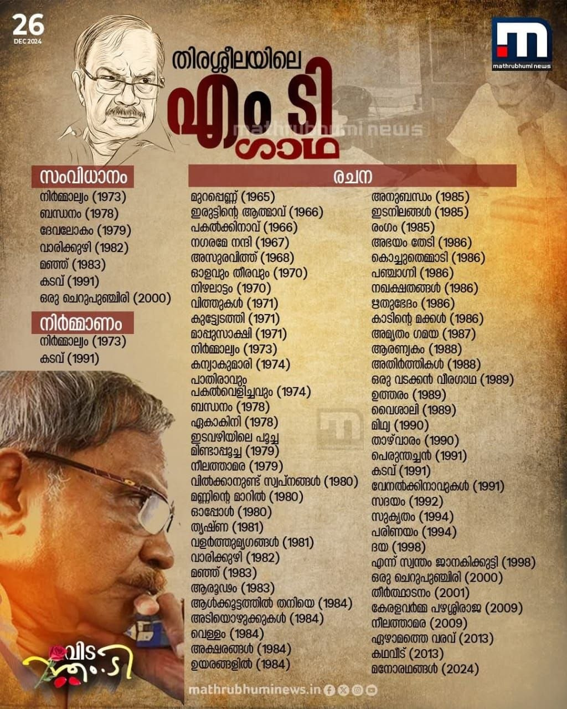
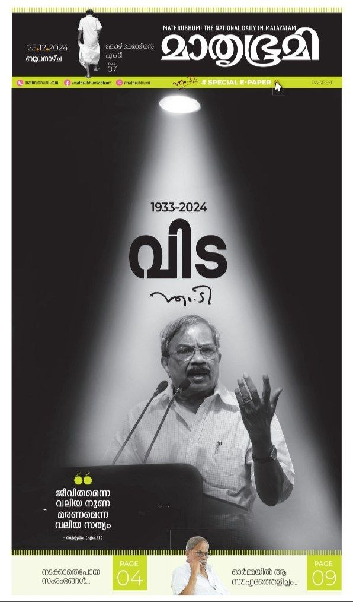
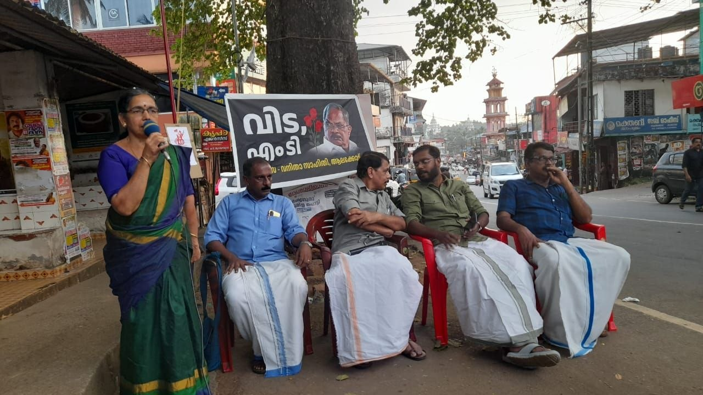
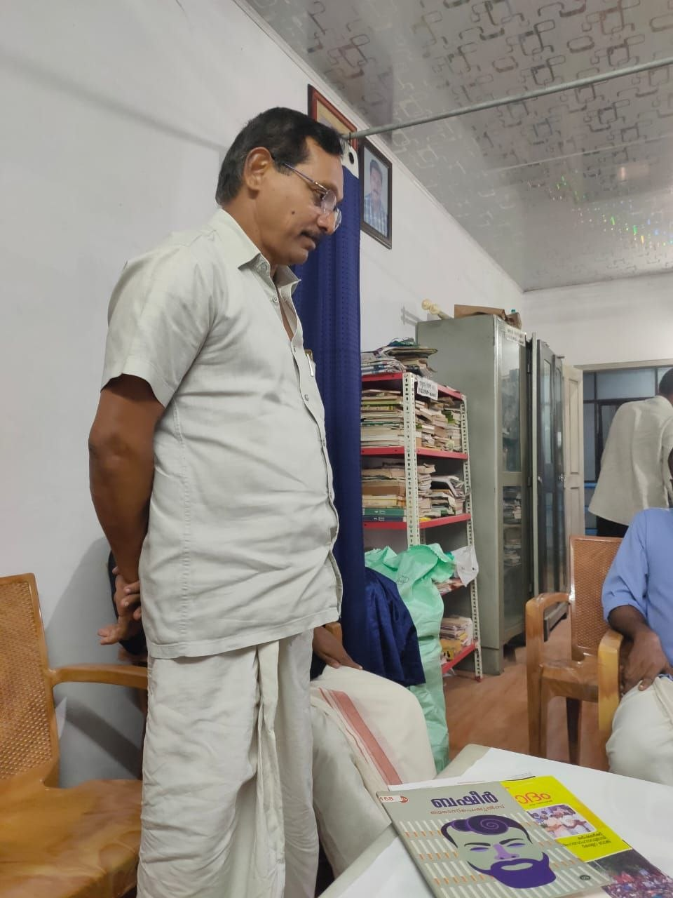
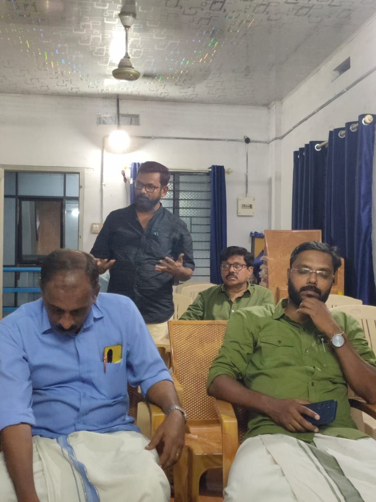
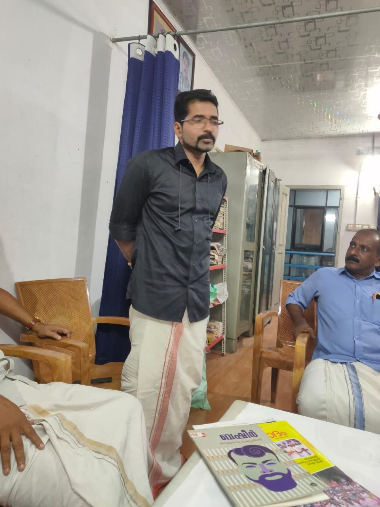
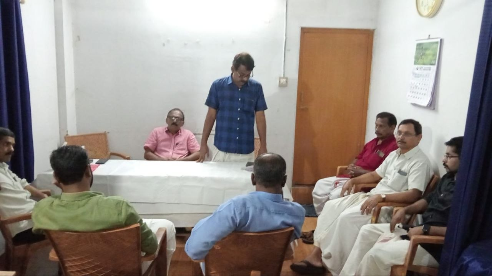
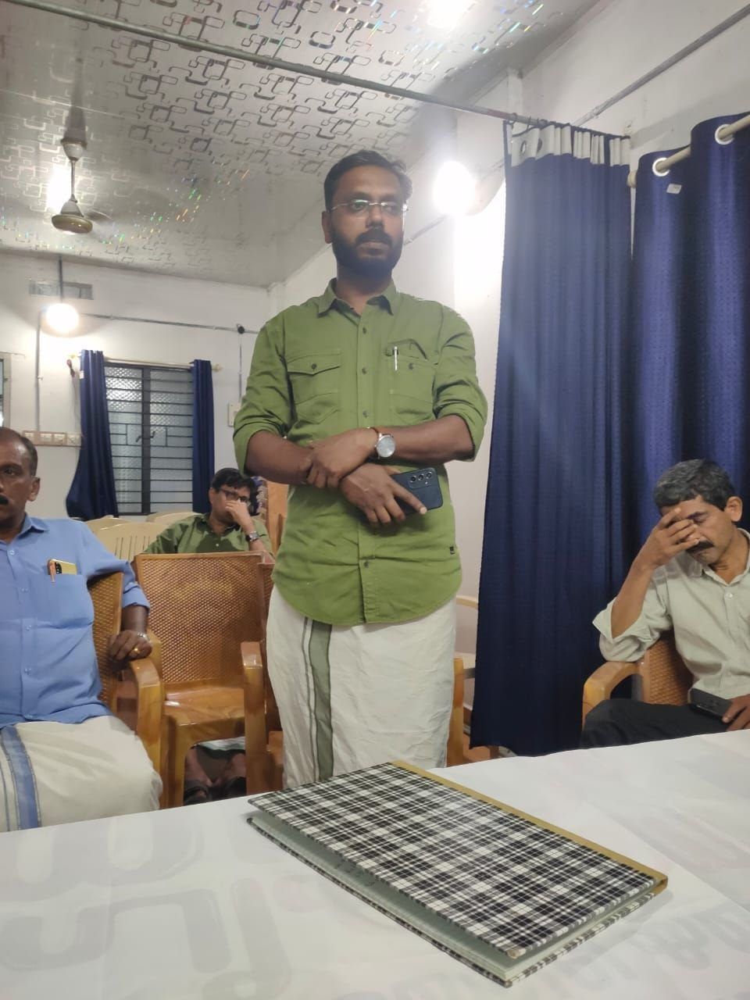
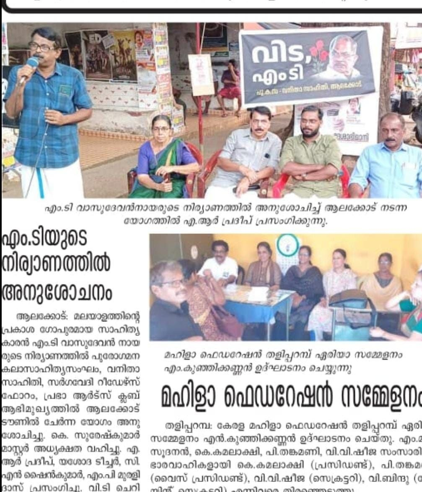

📥 PDF കാണുകബഷീർ കഴിഞ്ഞാൽ ഏറ്റവും അധികം ആളുകൾ അറിയുന്ന, പെട്ടെന്ന് ഏതെങ്കിലും സാഹിത്യകാരൻ്റെ പേര് പറയാൻ പറഞ്ഞാൽ പറയുന്ന ഒരു എഴുത്തുക്കാരൻ ആയിരുന്നു എം.ടി.
പുസ്തക വായന ഇല്ലാത്തവർക്കും ആ പേര് അറിയാവുന്ന വിധത്തിൽ മലയാളം എം.ടി എന്ന മനുഷ്യനെ ആഘോഷിച്ചിരുന്നു.
എം.ടി എം.റ്റിയാവാതെ മലയാള മണ്ണിൽ തന്നെ ഉണ്ടാവും.
ആളുകൾ വായിച്ചാലും ഇല്ലെങ്കിലും.
ബഷീറിനെ ആളുകൾ / കുട്ടികൾ വായിച്ചിട്ടൊന്നും അല്ലല്ലോ ബഷീർ ഇപ്പോഴും ആഘോഷിക്കപ്പെടുന്നത്.
ബഷീറിൻ്റെ ആടും മാങ്കോസ്റ്റിനും ഒക്കെ പോലെ എം.ടിയുടേതായി ഉള്ള എന്തെങ്കിലുമൊക്കെ ഉണ്ടാവുമല്ലോ...
സ്കൂളിൽ സാഹിത്യ ക്വിസ് ഒക്കെ നടത്തുമ്പം (ഓപ്ഷൻ ഇല്ലാതെ) മിക്ക ചോദ്യങ്ങൾക്കും ഉത്തരം അറിയാത്ത കുട്ടികൾ എഴുതുന്ന ഉത്തരത്തിൽ പെടുന്ന പേരുകൾ ആണ് ബഷീർ, എം.ടി, കുഞ്ഞുണ്ണി എന്നിവ.
അതായത് സാഹിത്യ പരിചയം, വായന ഇവ ഇല്ലാത്തവർക്കും എം.ടി എന്നറിയാം.
ഒരിക്കലും മരിക്കാത്ത ഘടാഘടിയൻ ശിങ്കമേ, (ബഷീറിൻ്റെ ഭാഷയിൽ, ഇവൻ പഴയ നൂലൻ വാസുവല്ല ,ഒരു ഘടാഘടിയൻ ശിങ്കമാകുന്നു) പ്രണാമം.🙏🙏🙏
പ്രി.ഡിഗ്രി കാലം മുതലേ എം.ടി.യുടെ എഴുത്തുമായി ബന്ധം.
പ്രി.ഡിഗ്രിക്ക് സെക്കൻ്റ് ലാംഗ്വേജ് മലയാളമായിരുന്നു. അന്ന് നാലുകെട്ട് പഠിക്കാനുണ്ടായിരുന്നു.
എം.ടി. ഇനിയില്ല
ദുഃഖം തോന്നുന്നു.
പ്രണാമം
മലയാളത്തിന്റെ അക്ഷര തേജസിന്
ആദരാഞ്ജലികൾ
ഇന്ന് നടന്ന എം.ടി. അനുസ്മരണയോഗത്തിൽ പങ്കെടുക്കണമെന്ന് ആഗ്രഹിച്ചിരുന്നു. സാധിച്ചില്ല.
മറ്റുപലരെയും പോലെ കുട്ടിക്കാലത്ത് പുസ്തകം കയ്യിലെടുത്ത കാലത്തെ വായനയുടെ ആഘോഷമായിരുന്നു എം ടി. അദ്ദേഹത്തിന്റെ നോവലുകളും കഥാസമാഹാരങ്ങളും ലൈബ്രറിയിൽ സുലഭം. പാലായിലെ റബ്ബർകാടുകൾക്കുമപ്പുറം അങ്ങ് ദൂരെയൊരു ഹൃദയഹാരിയായ നാട്. കുടപ്പനകൾ കുട പിടിച്ച വള്ളുവനാടൻ മലനിരകൾ. കരിമ്പനകൾ കാവൽ നിൽക്കുന്ന ഏറനാടൻ വയൽപരപ്പുകൾ. പഞ്ചാരമണൽത്തീരമുള്ള പുഴകൾ. നീലത്താമര വിരിയുന്ന മലമക്കാവിലെ അമ്പലക്കുളം. തമ്മിൽ ചേരാതെ തീരാതെ നീളുന്ന പാളത്തിലൂടെ കൂകിപ്പായുന്ന തീവണ്ടിയെപോലും ആദ്യമായി വായിച്ചറിഞ്ഞത് എം ടി കഥകളിലാണ്. (പിന്നെയും എത്ര കഴിഞ്ഞു അത് നേരിൽ കാണാൻ)
എന്റെ നാട്ടിലെ അച്ചടിഭാഷയെക്കാൾ നല്ലത് കേൾക്കാൻ ഇമ്പമുള്ള, സ്നേഹമൂറുന്ന, നാവിനെളുപ്പം വഴങ്ങുന്ന വള്ളുവനാടൻ ഭാഷ തന്നെ എന്ന് അന്നുറപ്പിച്ചതാണ്. അദ്ദേഹത്തിന്റെ സിനിമകൾ കണ്ടിട്ടുണ്ടെങ്കിലും സിനിമയുടെ തിരക്കഥാകൃത്തിനെയോ സംവിധായകനെയോ പോലും ശ്രദ്ധിക്കുവാനുള്ള വിവരം അന്നുണ്ടായിരുന്നില്ല. പിന്നീടാണ് ആ തിരക്കഥകളുടെ സൗന്ദര്യമറിയാനായത്. ഓരോ കഥകളും വായിക്കുമ്പോൾ ഉറപ്പിക്കും വലുതാകുമ്പോൾ ഇതിൽ പറയുന്നയിടങ്ങളിലൊക്കെ പോകണം. അങ്ങാടിയിലൂടെയും പാടവരമ്പിലൂടെയും നടന്നുചെന്ന് നാലുകെട്ടും നടുമുറ്റവുമുള്ള തറവാട്ടിന്റെ ഉമ്മറത്തു കയറി കോലായിൽ കാൽനീട്ടിയിരിക്കണം. ഇങ്ങനെയൊക്കെ ചിന്തിക്കാത്ത വായനക്കാരുണ്ടാവില്ല... എം ടി എന്ന രണ്ടക്ഷരത്തെയോർത്ത് അഭിമാനിക്കാത്ത മലയാളിയും.. തലമുറകൾ മനസ്സിൽ സൂക്ഷിക്കുന്ന ആ അതുല്യപ്രതിഭയുടെ ഓർമകൾക്ക് മുന്നിൽ സ്മരണാഞ്ജലി... 🙏






